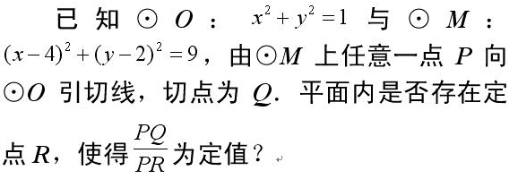

[几何] 对两定圆的幂之比为定值的点的轨迹
设两圆 $O_1$，$O_2$ 的半径分别为 $R$，$r$，圆心距 $2d$，动点 $P$ 对圆 $O_1$，$O_2$ 的幂分别记为 $\rho_1(P)$，$\rho_2(P)$。
今求满足 $\rho_1(P)=k\cdot\rho_2(P)$ 的点的轨迹，其中 $k$ 为常数。
建立坐标系，使 $O_1(-d,0)$，$O_2(d,0)$，设 $P(x,y)$，则由条件得\[
PO_1^2-R^2=k(PO_2^2-r^2) \iff (x+d)^2+y^2-R^2=k\bigl((x-d)^2+y^2-r^2\bigr)
\]展开整理为\[
(1-k) x^2+(1-k) y^2+d (2 k+2) x+d^2 (1-k)+k r^2-R^2=0\qquad(*)
\]可见要么是圆、要么是直线、要么是个一点、要么没轨迹。取些特殊情况，得到推论：
- 若 $k=1$，方程为\[4dx+r^2-R^2=0\]为一垂直于两圆心连线的直线，这也就是根轴定理；
- 若 $R=r=0$ 且 $k>0,k\ne1$，则变成了阿波罗尼斯圆问题，所以这个问题可以看作是阿波罗尼斯圆的推广吧。此时轨迹化为\[x^2+y^2+\frac{2d(k+1)}{(1-k)}\cdot x+d^2=0\]必然是个圆。注意这里的 $k$ 为线段比的平方。
下面考虑一下当 $k\ne1$ 时式 $(*)$ 的相关性质。为此，我们化为标准方程。为\[
\left(x-d\cdot\frac{k+1}{k-1}\right)^2+y^2=\frac{4k}{(k-1)^2}d^2+\frac{k r^2-R^2}{k-1}\qquad(*)'
\]故当 $\frac{4k}{(k-1)^2}d^2+\frac{k r^2-R^2}{k-1}>0$ 时式 $(*)'$ 为圆，设圆心为 $K$ 即有\[K\left(d\cdot\frac{k+1}{k-1},0\right)\]在过 $O_1$，$O_2$ 的直线上，并且与两定圆的半径大小无关。考虑该圆心 $K$ 到两定圆圆心的有向长度比，我们有\[
\frac{\overline{O_1K}}{\overline{KO_2}}=\frac{d\cdot\frac{k+1}{k-1}+d}{d-d\cdot\frac{k+1}{k-1}}=-k
\]正好等于幂之比的相反数。再考虑半径，设式 $(*)'$ 的圆的半径为 $T$ 则有\[
T=\sqrt{\frac{4k}{(k-1)^2}d^2+\frac{k r^2-R^2}{k-1}}
\]
对了，为什么发这贴？其实是因为在 K12 刚才看到这个贴 http://sq.k12.com.cn/discuz/thread-597627-1-1.html 里面的这个题：

(59.08 KB)
2011-10-8 13:34
如果这个定点 $R$ 存在，那么这个定点和圆 $O$ 相当于最开头所设的两定圆的其中一圆半径为 0，而圆 $M$ 则为那轨迹。
不妨令前面的 $O_1$ 为 $O$，$O_2$ 为定点 $R$，两者相距 $2d$，因圆 $M$ 半径为 3，故在 $T$ 的表达式中代入数据 $R=1,r=0$，应有\[
3=\sqrt{\frac{4k}{(k-1)^2}d^2-\frac{1}{k-1}}
\]因显然 $k>0$ 所以由前面有向长度比的式子知 $M$ 在 $OR$ 之外，所以 $R$ 在线段 $OM$ 上，于是有\[
\frac{\left|MO\right|}{\left|MR\right|}=k\iff \frac{\left|MO\right|}{\left|MO\right|-2d}=k\iff \frac{\sqrt5}{\sqrt5-d}=k
\]由上面两个方程，解得两组解\[
\left\{
\begin{aligned}
d&=\frac{\sqrt5}{10}\\
k&=\frac{10}9
\end{aligned}
\right.
或
\left\{
\begin{aligned}
d&=\frac{\sqrt5}2\\
k&=2
\end{aligned}
\right.
\]即\[
\left\{
\begin{aligned}
\left|OR\right|&=\frac{\sqrt5}5\\
定值为&=\frac{\sqrt{10}}3
\end{aligned}
\right.
或
\left\{
\begin{aligned}
\left|OR\right|&=\sqrt5\\
定值为&=\sqrt2
\end{aligned}
\right.
\]由此也容易得到 $R\left(\frac25,\frac15\right)$ 或 $R(2,1)$。
注：切线长比的平方才是圆幂比，所以最后得到的 $k$ 要开方才是线长比。
|
本主题由 kuing 于 2013-1-19 15:02 分类

 发表于 2011-10-8 12:59
发表于 2011-10-8 12:59
 发表于 2011-10-8 15:20
发表于 2011-10-8 15:20